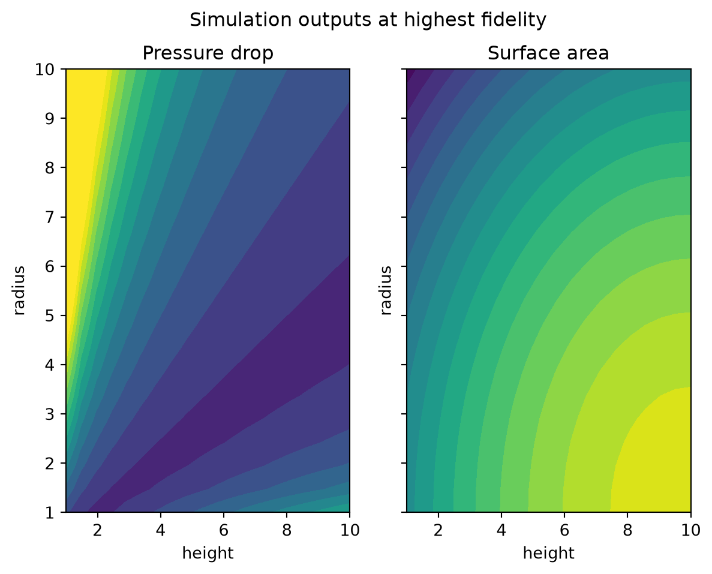
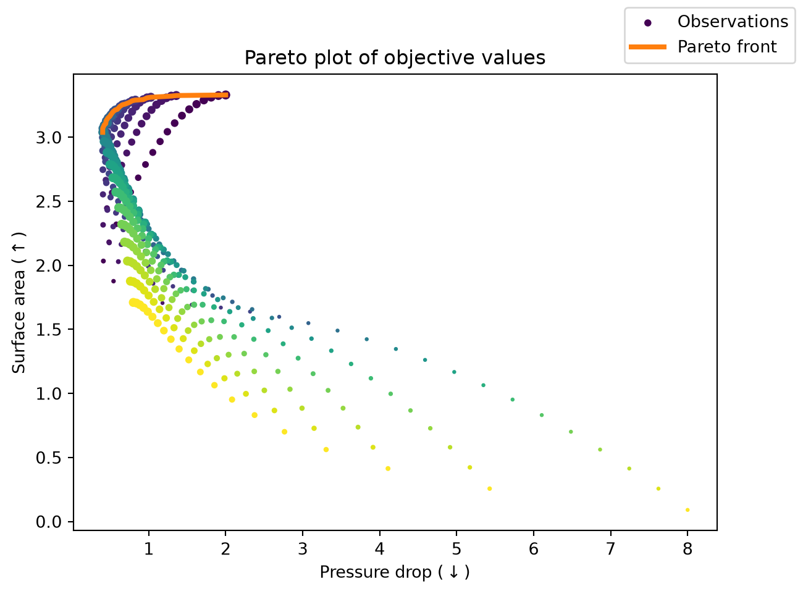
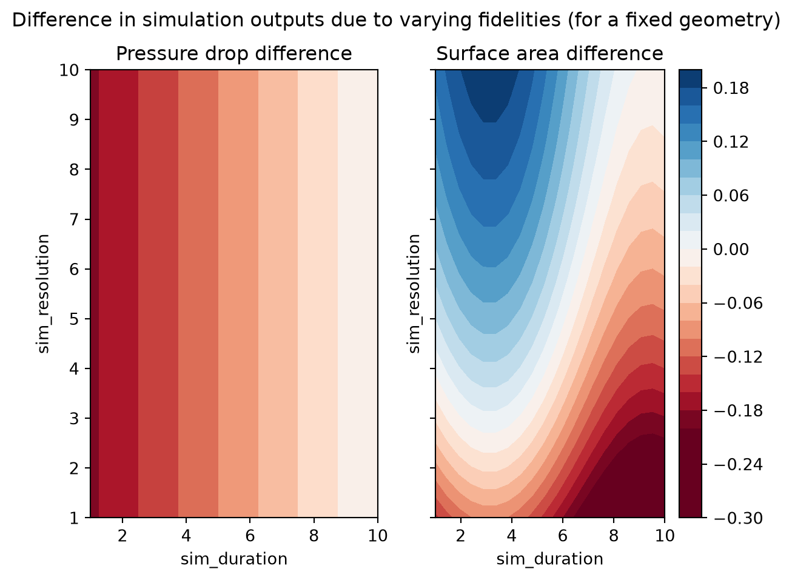

from bofire.data_models.acquisition_functions.api import qMFHVKG
from bofire.data_models.enum import SamplingMethodEnum
from bofire.data_models.features.api import ContinuousTaskInput
from bofire.data_models.strategies.api import BotorchOptimizer
from bofire.data_models.surrogates.api import LinearDeterministicSurrogate
from bofire.strategies.api import MultiFidelityHVKGStrategy, RandomStrategy
import pandas as pd
import numpy as np
import os
SMOKE_TEST = os.environ.get("SMOKE_TEST")Multi-Objective, Multi-Fidelity BO
This tutorial shows how to set up a multi-fidelity problem that has multiple objectives. This approach uses the Multi-fidelity Hypervolume Knowledge Gradient acquisition function [1], which supports: - Multiple objectives, optimizing their pareto front - Multiple fidelities, which can correspond to the quality of a function evaluation. For example, when running a computer simulation, one can control the resolution or the duration, each of which trade-off between quality and cost. - A cost-weighting, which determines how expensive an experiment is to carry out given the fidelity.
For a deeper look at how this acquisition function works, see the corresponding paper or the BoTorch tutorial.
[1] S. Daulton, M. Balandat, and E. Bakshy. Hypervolume Knowledge Gradient for Multi-Objective Bayesian Optimization with Partial Information. ICML, 2023.
if SMOKE_TEST:
acqf_optimizer = BotorchOptimizer(
n_raw_samples=32,
maxiter=10,
n_restarts=2,
)
acqf = qMFHVKG(
num_fantasies=2,
num_pareto=3
)
else:
acqf_optimizer = BotorchOptimizer(
n_raw_samples=256,
maxiter=100,
n_restarts=10,
)
acqf = qMFHVKG(
num_fantasies=4,
num_pareto=5
)Problem definition
We will consider a very simple objective function - a rigid-body physics simulation of thousands of particles in a packed bed reactor. We can control the shape of each particle, and we want to optimize the performance of the reactor. This includes: - maximizing air flow through the reactor (minimizing pressure drop), and - maximizing the number reaction sites (maximizing surface area per unit volume of the reactor).
We can also decrease the fidelity in two different ways, each reducing the cost of an experiment: - stop the simulation early, and - reduce the resolution of the simulation.
def simulation_black_box(experiments: pd.DataFrame) -> pd.DataFrame:
"""Toy function representing a rigid-body simulation of reactor packing.
For the sake of this tutorial, we provide simple expressions to represent the various
impacts of changing the experiment conditions and fidelities."""
# Pressure drop is minimized for near-spherical cylinders
aspect_ratio = experiments["height"] / (2 * experiments["radius"])
pressure_drop = 0.4 * np.exp(np.abs(np.log(aspect_ratio)))
# Specific surface area is maximized for tall, thin cylinders
optimal_shape_for_surface_area = {"height": 10.0, "radius": 1.0}
dist = experiments[["height", "radius"]].sub(optimal_shape_for_surface_area).to_numpy()
surface_area = 3.5 - 0.02 * (dist ** 2).sum(axis=1)
# By terminating the simulation early, the packing doesn't settle - we underestimate
# the pressure drop, and the specific surface area has some noisy bias
pressure_drop += 0.2 * (experiments["sim_duration"] - 1.0)
surface_area += 0.1 * np.sin(5.0 * experiments["sim_duration"])
# By decreasing the resolution, the computed mesh starts combining adjacent particles
# to fill voids. This causes large decrease in specific surface area for small resolution.
# To make this more realistic, you may want to make this effect a function of the
# geometry, since a smaller geometry would require a higher resolution.
surface_area += -0.2 * np.exp(2.0 * (1.0 - experiments["sim_resolution"]) - 1.0)
return pd.DataFrame({
"pressure_drop": pressure_drop,
"surface_area": surface_area,
})from bofire.benchmarks.api import Benchmark
import bofire.data_models.domain.api as domain_api
import bofire.data_models.features.api as feature_api
import bofire.data_models.objectives.api as objective_api
class SimulationBenchmark(Benchmark):
def __init__(self, **kwargs):
super().__init__(**kwargs)
inputs = domain_api.Inputs(features=[
feature_api.ContinuousInput(key="height", bounds=(1.0, 10.0)),
feature_api.ContinuousInput(key="radius", bounds=(1.0, 10.0)),
feature_api.ContinuousTaskInput(key="sim_duration", bounds=(0.1, 1.0)),
feature_api.ContinuousTaskInput(key="sim_resolution", bounds=(0.2, 1.0)),
])
outputs = domain_api.Outputs(features=[
feature_api.ContinuousOutput(key="pressure_drop", objective=objective_api.MinimizeObjective()),
feature_api.ContinuousOutput(key="surface_area", objective=objective_api.MaximizeObjective()),
])
self._domain = domain_api.Domain(
inputs=inputs,
outputs=outputs,
)
def _f(self, candidates: pd.DataFrame):
return simulation_black_box(candidates)Let’s plot the objective function. First, we show the surface at the highest fidelity, varying the height+radius parameters. The objective surface is quite smooth, and unimodal, so this problem shouldn’t be too difficult.
import matplotlib.pyplot as plt
from matplotlib.colors import Normalize
target_fidelity = {"sim_duration": 1.0, "sim_resolution": 1.0}
fig, axs = plt.subplots(ncols=2, sharex=True, sharey=True)
NUM_PLOT = 20
hs, rs = np.meshgrid(np.linspace(1.0, 10.0, NUM_PLOT), np.linspace(1.0, 10.0, NUM_PLOT))
data = pd.DataFrame({"height": hs.flatten(), "radius": rs.flatten(), **target_fidelity})
res = simulation_black_box(data)
norm = Normalize(vmin=0.0, vmax=3.5)
axs[0].contourf(hs, rs, res["pressure_drop"].to_numpy().reshape(NUM_PLOT, NUM_PLOT), norm=norm, levels=30)
axs[1].contourf(hs, rs, res["surface_area"].to_numpy().reshape(NUM_PLOT, NUM_PLOT), norm=norm, levels=20)
fig.suptitle("Simulation outputs at highest fidelity")
axs[0].set_title("Pressure drop")
axs[1].set_title("Surface area")
for ax in axs:
ax.set_xlabel("height")
ax.set_ylabel("radius")
We can also plot the pareto front below, keeping in mind that we want to minimize the pressure drop, and maximize the surface area. We color the observations according to the radius, and scale their size according to the height.
def get_pareto_idcs(data: pd.DataFrame) -> list[int]:
dominating_points: list[int] = []
cur_max_surface_area = -np.inf
for idx, row in res.sort_values(by="pressure_drop").iterrows():
if row["surface_area"] > cur_max_surface_area:
cur_max_surface_area = row["surface_area"]
dominating_points.append(idx)
return dominating_points
fig, ax = plt.subplots()
ax.scatter(res["pressure_drop"], res["surface_area"], label="Observations", c=data["radius"], s=2.0*data["height"])
dominating_points = get_pareto_idcs(res)
ax.plot(res.loc[dominating_points, "pressure_drop"], res.loc[dominating_points, "surface_area"], color="C1", linewidth=3, label="Pareto front")
ax.set_title("Pareto plot of objective values")
ax.set_xlabel(r"Pressure drop ($\downarrow$)")
ax.set_ylabel(r"Surface area ($\uparrow$)")
fig.legend()
We also show the impact of varying the fidelity parameters, for a fixed height+radius. This shows the scale of bias that is introduced when changing the fidelities.
from matplotlib.colors import CenteredNorm
fixed_shape = {"height": 7.5, "radius": 5.0}
fig, axs = plt.subplots(ncols=2, sharex=True, sharey=True)
durs, ress = np.meshgrid(np.linspace(0.1, 1.0, NUM_PLOT), np.linspace(0.2, 1.0, NUM_PLOT))
data = pd.DataFrame({"sim_duration": durs.flatten(), "sim_resolution": ress.flatten(), **fixed_shape})
res = simulation_black_box(data)
# the last datapoint corresponds to the highest fidelity
# we subtract the highest fidelity to plot differences
res = res.sub(res.iloc[-1])
norm = CenteredNorm()
axs[0].contourf(hs, rs, res["pressure_drop"].to_numpy().reshape(NUM_PLOT, NUM_PLOT), cmap="RdBu", norm=norm)
cf = axs[1].contourf(hs, rs, res["surface_area"].to_numpy().reshape(NUM_PLOT, NUM_PLOT), cmap="RdBu", norm=norm, levels=30)
fig.suptitle(f"Difference in simulation outputs due to varying fidelities (for a fixed geometry)")
axs[0].set_title("Pressure drop difference")
axs[1].set_title("Surface area difference")
for ax in axs:
ax.set_xlabel("sim_duration")
ax.set_ylabel("sim_resolution")
fig.colorbar(cf, ax=axs[1])
Creating the strategy
Now that the problem has been defined, we can sample some experiments from the problem, and define the strategy that we will use to ask for points.
benchmark = SimulationBenchmark()
samples = benchmark.domain.inputs.sample(10, seed=0)
experiments = benchmark.f(samples, return_complete=True)
experiments.head()| height | radius | sim_duration | sim_resolution | pressure_drop | surface_area | |
|---|---|---|---|---|---|---|
| 0 | 2.658293 | 4.399428 | 0.540408 | 0.535277 | 1.232067 | 2.047043 |
| 1 | 2.716066 | 6.081596 | 0.447888 | 0.919367 | 1.680873 | 1.914449 |
| 2 | 4.674992 | 7.387116 | 0.237494 | 0.915109 | 1.111606 | 2.122532 |
| 3 | 7.157799 | 8.927885 | 0.239628 | 0.812347 | 0.845761 | 2.067462 |
| 4 | 2.847855 | 5.074227 | 0.786220 | 0.405740 | 1.382661 | 1.832457 |
from bofire.strategies.api import MultiFidelityHVKGStrategy
strategy = MultiFidelityHVKGStrategy.make(
domain=benchmark.domain,
# We manually pass in `acqf` and the `acqf_optimizer` below so that we can
# reduce the computation time by changing hyperparameters. The default
# hyperparameters should be a good trade-off between speed and quality, but
# can be changed to suit your needs.
acquisition_function=acqf,
acquisition_optimizer=acqf_optimizer
)
strategy.tell(experiments)
strategy.ask(1)/opt/hostedtoolcache/Python/3.12.13/x64/lib/python3.12/site-packages/bofire/surrogates/botorch.py:185: UserWarning: The given NumPy array is not writable, and PyTorch does not support non-writable tensors. This means writing to this tensor will result in undefined behavior. You may want to copy the array to protect its data or make it writable before converting it to a tensor. This type of warning will be suppressed for the rest of this program. (Triggered internally at /pytorch/torch/csrc/utils/tensor_numpy.cpp:213.)
torch.from_numpy(Y.values).to(**tkwargs),| height | radius | sim_duration | sim_resolution | pressure_drop_pred | surface_area_pred | pressure_drop_sd | surface_area_sd | pressure_drop_des | surface_area_des | |
|---|---|---|---|---|---|---|---|---|---|---|
| 0 | 8.340725 | 3.042783 | 0.339727 | 0.734352 | 0.654481 | 3.022196 | 0.308817 | 0.271622 | -0.654481 | 3.022196 |
Defining the cost weighting
A key piece of information that we omitted in the above cells is the cost function - how much does an experiment cost to run? This is highly relevant in multi-fidelity settings, since if all experiments cost the same, then there is no reason to not query at the highest fidelity.
By default, we assume that an experiment at the lowest fidelity costs 1.0 units, and scales linearly with the task features with coefficients 1.0. However, this should be explicitly defined as a part of the strategy. Note that currently, BoFire only supports linear costs.
In our example, increasing the duration of the simulation will increase the cost by a large coefficient. However (eg. due to parallelization of the simulation), increasing the resolution incurs a smaller cost. We can explicitly include this in the model. We would then expect the strategy to propose experiments at full resolution (since there is no significant cost savings to reducing the resolution), but not necessarily at the full duration.
from bofire.data_models.surrogates.api import LinearDeterministicSurrogate
cost_model = LinearDeterministicSurrogate(
inputs=benchmark.domain.inputs.get(ContinuousTaskInput),
outputs=domain_api.Outputs(features=[
feature_api.ContinuousOutput(key="cost", objective=None)
]),
coefficients={
"sim_duration": 2.0,
"sim_resolution": 0.1,
},
intercept=1.0 # fixed cost of lowest fidelity
)
strategy = MultiFidelityHVKGStrategy.make(
domain=benchmark.domain,
acquisition_function=acqf,
acquisition_optimizer=acqf_optimizer
)
strategy.tell(experiments)
strategy.ask(1)| height | radius | sim_duration | sim_resolution | pressure_drop_pred | surface_area_pred | pressure_drop_sd | surface_area_sd | pressure_drop_des | surface_area_des | |
|---|---|---|---|---|---|---|---|---|---|---|
| 0 | 4.124519 | 10.0 | 0.1 | 0.2 | 0.861837 | 2.071496 | 0.679274 | 0.671471 | -0.861837 | 2.071496 |